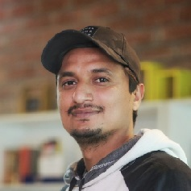

Waqas Ahmad
I am Full Stack Software Engineer with over 12 years of development experience in C#
Backend, Web, Desktop & Mobile Apps. Currently part of an agile team responsible for developing
highly scalable and reliable applications using C# & .Net Core.
👉 waqas316@gmail.com
🔗 linkedin.com/in/waqas-ahmad-74574a16
Education
✔️ Master of Science (Computer Software Engineering)
2013 - 2015
NUST College of Electrical and Mechanical Engineering Islamabad
✔️ Bachelor of Science (Computer Science)
2006 - 2010
University Institute of information Technology, PMAS AAUR Rawalpindi
Skills
Programming Languages & Frameworks
C#, .Net Core, .NET Framework, Web API, Entity Framework, ADO.NET,
ASP.Net MVC, Kafka, Kibana, OData, WinFroms, Crystal Reports
Web Development
Angular, React JS, Java Script, JQuery, Bootstrap, HTML, CSS, AJAX,
JSON, XML/XSLT, Kendo Charts, D3 Charts, SPA Framework
Cloud
AWS ( S3, EC2, ECR, ECS, EKS ), Docker
Mobile Development
Ionic, Cordova, Angular, Android Native
Storage
MS-SQL, Oracle, MySQL, SQLite
Processes
Agile Scrum, Agile SAFe
Work History
🚧 Lead Software Developer | S&P Global
Duration: May 2019 – Present
Tools & Technologies: C#, .NET Core, SQL, Kafka, Kibana, Jenkins, AWS S3, EC2, ECR, ECS, EKS,
Docker, Azure DevOps, Odata
Responsibilities: I am serving as a Lead Software developer for S&P Global, where I am working
in an Agile SAFe based
team. I am responsible for designing and developing new features, maintaining existing applications
and doing research
base POC on new technologies according to job requirement.
Distinctive Tasks:
- Designed & developed a .Net Core application (Universal Click-through Backend) for classifying &
tagging multiple
financial institutes reported in a financial document.
- Created Generic CDC (Change Data Capture) ETL pipeline (Offerings Universal Click-through),
which not only provided
mechanism for live data flow but was also able to migrate over 10 million historic financial
source tagging data.
- Integrated offering tranche dataset into existing ETL pipeline that enabled product team to
expand source data
universe for end user.
- Created workflow for transactions datasets by creating CDC pipeline which reduces the time for
flow of data to end
user from 6 hours to less than 2 minutes.
- Migrating existing application to AWS cloud and coordinating with DevOps teams in setting up
CI/CD pipeline.
🚧 Principal Software Engineer | Sequel Technologies
Duration: Dec 2012 – Apr 2019
Tools & Technologies: C#, .Net Core, .Net Framework, VB.net, ASP.net MVC, Web API, Angular,
JavaScript, Bootstrap, HTML, CSS, JQuery, AJAX, JSON, Telerik Reports, Oracle, Ionic, Cordova
Responsibilities: I served as a Principal Software Engineer in a Software Development team. I
was responsible for
developing, maintaining and providing support to client. I was a Lead developer for many of the new
applications.
Distinctive Tasks:
- Designed & developed new features for PracticeEHR (Electronic Health Record) including the
dashboard from
backend to frontend, providing a complete overview of different datasets using .Net Core API,
kendo charts, and d3.
- Developed the billing and reporting module back to front from scratch and enhanced other modules
including
patient, claims, medications, labs, scheduling, document management, securing messaging,
scanning, and more.
- Implemented visualization graphs for billing datasets using D3.js as a feature.
- I worked to improve the performance of Visits, reducing load time from over 30 seconds to below
5 seconds. I also
maintained the Mobile version of the app developed in Ionic, Cordova, and angular.
- Designed and developed EDI Simplified Portal solely from scratch to finish product. It is an
online portal and has easy
integration with Practice Management and EHR Systems.
- Designed and developed EPM Dashboard, a billing single-page app, solely from scratch to finish
product.
- Designed and developed PEHR Reporting, a Reporting app, solely from scratch to finish product,
and provided its
integration with main product PracticeEHR.
- Created supporting services like Patient Data Export Service during certification of PEHR and
PEHR API for other client
facing products.
- Provided support to maintain and enhance existing application Patient Portal.
- On boarded & trained new developers to existing products and application that I had created.
🚧 Software Engineer | Netsolace Information Technology (Broadpeak Technologies)
Duration: Mar 2011 – Dec 2012
Tools & Technologies: C#, VB.net, WinForms, ASP.net, SQL, Web Services
Responsibilities: I was part of team responsible for development and management of software
product Store
Management System (SMS) which was used in more than 1200 edible arrangements franchises stores in 12
different
countriesincluding USA, Canada, China and Gulf countries.
Distinctive Tasks:
- Designed & developed multilingual feature for Store Management System.
- Enhanced order module and implanted new features.
- Increased the performance of the order tracking module in the application & fixed memory leak
issues.
- I also created a feature in the app to sync and control orders made from the iPhone/IPad version
of the application.
- Added auto update feature in the application.
- I helped to maintain code quality, and also took part in Identifying bottlenecks and bugs and
devising solutions to
these problems.